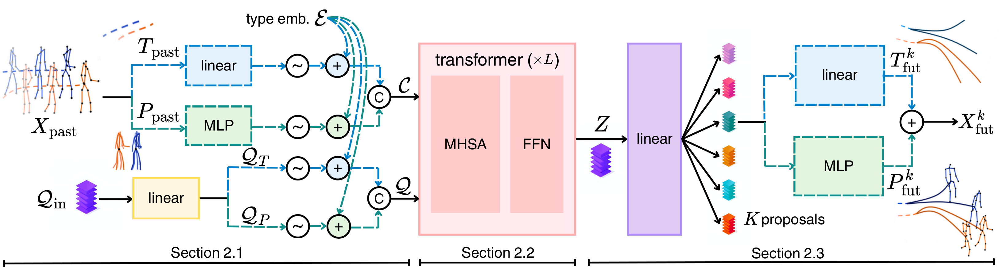
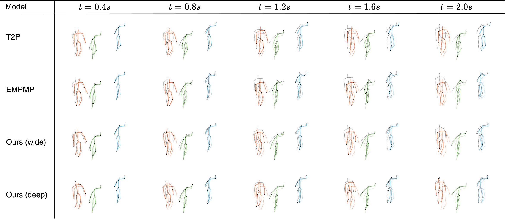

Wide model on MOCAP-UMPM
SimpliHuMoN: Simplifying Human Motion Prediction
University of Illinois Urbana-Champaign
Accepted at NeurIPS 2026
Overview
One architecture for every motion task.
Human motion prediction spans pose forecasting, trajectory forecasting, and their joint prediction. Existing approaches often solve each task with specialized machinery.
SimpliHuMoN uses one streamlined, end-to-end transformer across all three settings. Past pose and trajectory tokens attend jointly with learnable future queries, producing multiple complete and plausible motion hypotheses in a single forward pass.
01PoseRelative body articulation
02TrajectoryGlobal root movement
03Pose + trajectoryHolistic 3D motion
Method
A unified sequence of context and queries
Trajectory and root-relative pose are embedded as distinct token streams. Learnable future queries join the historical context inside a shared self-attention stack, then lightweight heads produce K future proposals.

Results
Simple, accurate, and fast
Across pose-only, trajectory-only, and combined benchmarks, the same architecture competes with specialized systems while retaining a small, parallel design.
Deep model on MOCAP-UMPM
Deep-model test throughput

Qualitative comparison
Motion across the full horizon
Compare complete predicted sequences from T2P, EMPMP, and both SimpliHuMoN configurations on MOCAP-UMPM.
Sequence
Baseline
T2P
Baseline
EMPMP
Ours
Wide L=6, d=192
Ours
Deep L=16, d=48
Black dashed ground-truth future · Colored dashed last input pose · Colored solid predicted motion
Citation
Build on SimpliHuMoN
Code and pretrained MOCAP-UMPM checkpoints are publicly available.
@article{agrawal2026simplihumon,
title={SimpliHuMoN: Simplifying Human Motion Prediction},
author={Agrawal, Aadya and Schwing, Alexander G.},
journal={arXiv preprint arXiv:2603.04399},
year={2026}
}